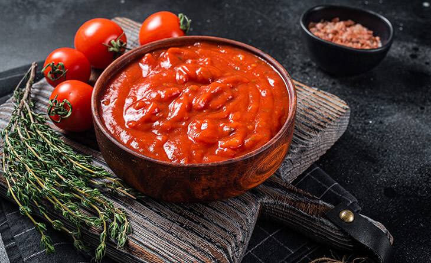

Seis alimentos que usasse o tomate

Pão trançado com tomate seco e rúcula
Tomate aos dois queijos

Molho caseiro de tomate
Tomate recheado com abacate ao pesto
Tomate recheado com carne moída

Tomate seco
Valor nutricional
Umidade-96,11g/100g, Lipídios-0,059g/100g, Carboidratos-0,14g/100g, Proteinas-3,36g/100g, Calorias-14,58kcal/100g.
Produção
A produção de tomate deve ser feita em solos argilosos com drenagem, não sendo tão necessária em solos arenosos, a aração deve ser feita entre 30 e 60 dias antes da plantação, com profundidade de 30 a 30 cm.
O tomate gosta de locais iluminosos na medida em que a planta cresce, necessita de suporte para que os galhos não entortem e quebrem com o peso do fruto.
O espaço deve ser flxível, adquirindo espaçamento maiores no verão quando as temperaturas e umidade são elevadas e se deseja produzir frutos com maior peso,( 1,10 a 1,20m) em fileiras por 0,60 a 0,70m entre plantas.
Para se desenvolver melhor necessita de um torno de 6 horas diárias de sol, é fundamental que seja um solo bem drenado.